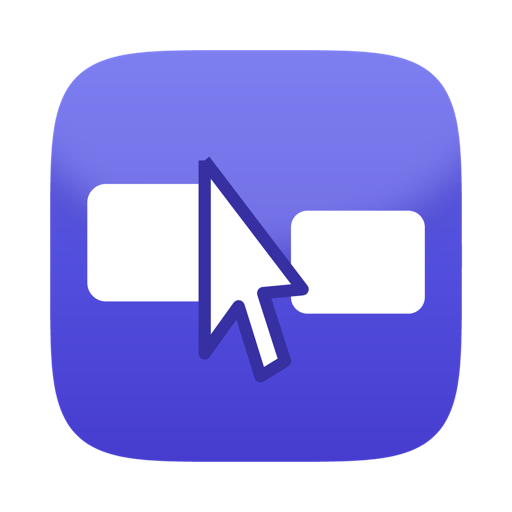

TetherMove your pointer off the edge of one screen and it carries on onto the next computer. Type there, click there, paste what you copied. No KVM switch, no cloud account, no screen streaming.
Free and open source, for macOS, Windows and Linux — including Wayland.
A work laptop next to a desktop. A Windows gaming PC beside a Mac. A Linux box under the desk you keep reaching over to. You end up with a second keyboard you barely have room for, and copying a link between them means emailing it to yourself.
Tether puts every screen on one imaginary desktop. Push the pointer past the right edge of one and it appears on the left edge of the next — the same way two monitors on one computer already work, except these are different computers, running different operating systems.
Run the same command on every machine. They find each other over the network and work out between themselves which one keeps track of the pointer. There is no host to nominate.
Put a hand on the other machine's trackpad and it takes over driving. No hotkey, no switching, no mode to remember.
Copy on one machine, paste on another. Text and images, both directions, automatically.
The Linux backend sits on the kernel's evdev and uinput interfaces rather than X11, so it works on Wayland, X11 and a bare console alike.
TLS in both directions, authenticated by pinned certificate fingerprints like SSH. Nothing leaves your network. No account, no telemetry, no server in the middle.
Every screen of every machine goes on one canvas. Drag them into the arrangement they really have on your desk.
Keys travel as physical positions, so each machine applies its own layout. ⌘C on a Mac keyboard arrives as Ctrl+C on Windows.
Only input crosses the network — a few bytes per event. Every machine draws its own screen at full speed. This is not remote desktop.
| Platform | How it works | What it needs |
|---|---|---|
| macOS | CGEventTap and CGEvent | Accessibility permission |
| Windows | Low-level hooks and SendInput | Nothing — allow it through the firewall |
| Linux | evdev and uinput — X11, Wayland or console | Membership of the input group |
Apple Silicon and Intel in one universal build.
Windows x86-64. Linux x86-64, with a .desktop entry and a
PKGBUILD for Arch.
Download the build for each machine from the releases page, then run the same thing everywhere:
tether run --pair # on every machine, once tether run # from then on
The first run prints a fingerprint on each machine. Check they match — that
is the pairing — then restart without --pair. From then on only
those exact machines are accepted.
On macOS and Linux there is a one-line install:
curl -fsSL https://raw.githubusercontent.com/Fini240/tether/main/install.sh | sh
Honest status: Tether is young — version 0.5.2 — and built in the open. Edge crossing, multi-monitor, clipboard, automatic handoff, discovery and encryption all work and are used daily. File transfer is not finished, and the builds are unsigned, so macOS Gatekeeper and Windows SmartScreen will both warn on first run.
These all solve the same problem, and Tether owes the idea to them. The differences worth knowing:
| Price | Wayland | Setup | |
|---|---|---|---|
| Tether | Free, MIT/Apache | Yes, via evdev | Automatic — no host to pick |
| Synergy | Commercial | Partial | Server and clients configured |
| Barrier | Free | No — X11 only | Server and clients configured |
| Deskflow | Free | In progress | Server and clients configured |
Barrier is no longer actively maintained; Deskflow continues that lineage. If you want the most established option, they are it. Tether is a fresh implementation in Rust, aimed at needing no configuration at all.
Yes. The Linux backend uses the kernel's evdev and uinput interfaces
rather than X11 or a Wayland protocol, so the same backend covers X11,
Wayland and a machine with no desktop at all. It needs membership of the
input group, granted once with a udev rule shipped in the
release.
No. Only input events and clipboard contents cross the network. Each computer draws its own screen, so there is no video latency and no bandwidth cost. If you want to see one machine's screen on another, you want remote desktop instead — this is the opposite tool.
No, deliberately. Tether is for machines on the same local network. Traffic is TLS encrypted and both ends authenticate with pinned certificate fingerprints, but it is not built to be exposed to the internet.
None of them. Every machine runs the same command; they discover each other over mDNS and elect between themselves which one keeps the authoritative pointer position, by comparing machine ids. Switch one on and it joins, switch one off and the rest carry on.
Yes — MIT or Apache-2.0, no paid tier, no account, no telemetry. The whole source is on GitHub.
Often, but not always. A fullscreen game that captures the mouse through Raw Input on Windows can pull the pointer back while you are working on another machine, because a userspace hook cannot take input away from it. Running the game windowed or borderless, or using the cursor lock hotkey, both help.
Not on Windows or macOS. On Linux it needs your account to be in the
input group, which is granted once. Note that anyone in that
group can read every keystroke on the machine — inherent to sharing a
keyboard, and true of every tool of this kind.